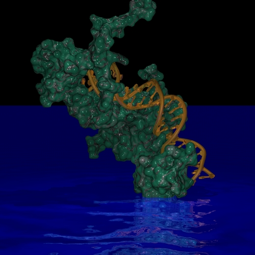

|
To use predefined textures, export your scene
with the -nocolor flag. All color information in the object definition
will be omitted, and the pigment statement in the texture
declaration becomes active. In the scene below, the surface and the DNA were
rendered with two different textures, with the following modifications to the
.pov file:
#version 3.1;
#include "colors.inc"
#include "stones1.inc"
#include "golds.inc"
...
light_source {<0,100,0> color rgb 0.5 spotlight radius 100 point_at <0,0,0> }
plane {y,-40
texture {
pigment {color rgb <0,0,1>}
normal {ripples 1 scale 20 turbulence 0.7}
finish {
ambient 0.3
diffuse 0.3
specular 0.3
reflection 0.7
}
}
}
...
#declare _s_s_mat = texture {T_Stone18 scale 20}
...
#declare _d_d_mat = texture {T_Gold_2A}

(c) 2001-2005 Ansgar Philippsen
|